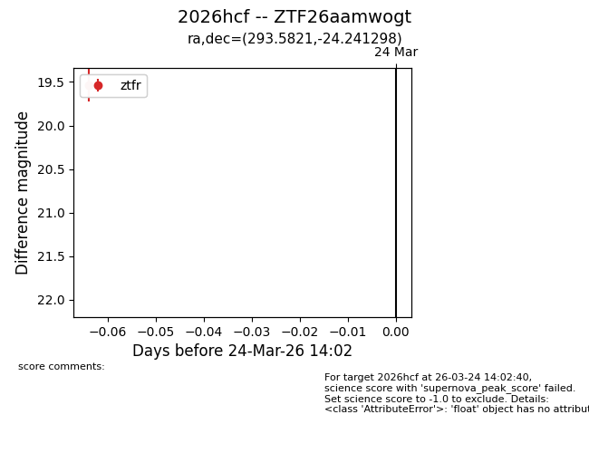
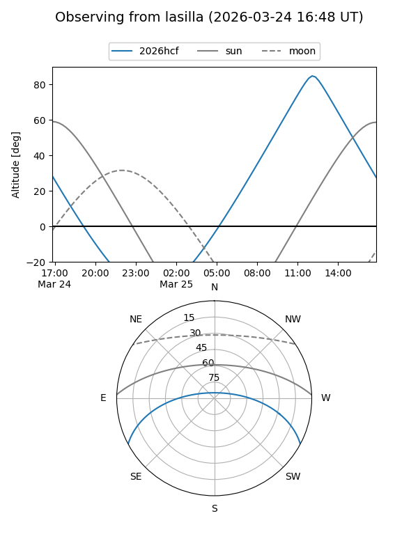
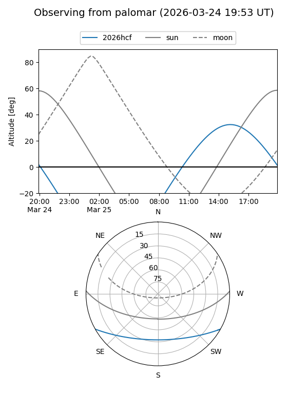

2026hcf
Target 2026hcf at 2026-03-24 14:05
Aliases and brokers:
FINK: link
Lasair: link
ALeRCE: link
TNS: link
YSE: link
alt names
ZTF26aamwogt (ztf,fink_ztf)
2026hcf (tns,yse)
Coordinates:
equatorial (ra, dec) = 293.5821,-24.24130
equatorial (HMS+DMS) = 19:34:19.72,-24:14:28.67
galactic (l, b) = (15.1081,-19.76751)
Flags:
Photometry:
last ztfr=19.54
1 ztfr detections
Lightcurve

Visibility


Additional plots